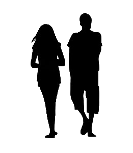
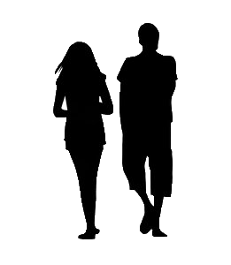
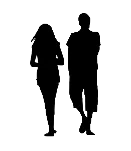

This is the third scene test for connection to scene 2. To be added: Silhouettes walking with Conversation scrolling, background scrolling horizontally as you scroll vertically (z-values?).
It's a nice night for a walk.
Yeah. I'm glad the rain held out.

 
